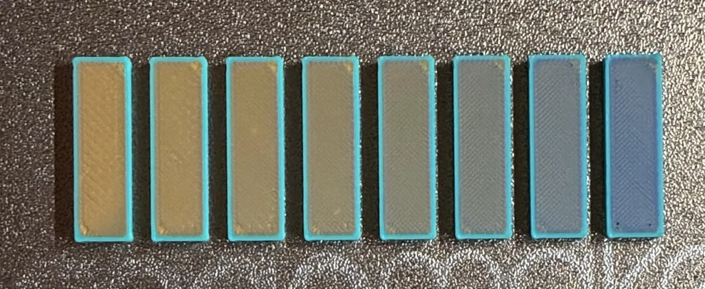
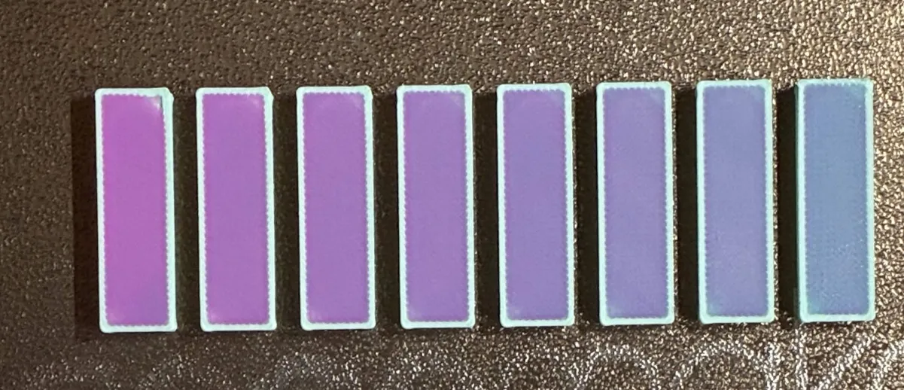

§1 · §3 — Colour
The Sandwich
A normal slicer prints the top of your part once: one filament, one pattern, one pass. Here that single layer becomes a small stack of passes you build yourself, and the colours that come out are ones no single filament can make.
- no gate
- print-verified
- since 2.3
Where Quality›Surface ColorStitch›Sandwich editor…
What breaks without it
Ask a stock slicer for a two-tone top surface and it gives you exactly one answer: paint some triangles one colour and the rest another. Hard edges, flat fills, one filament per region. There is no way to say "print this face slightly blue, over slightly white, with a yellow tint on top", because as far as the slicer is concerned the top surface is one thing and it gets one tool.
Stock
The top surface is one solid fill, one tool, one angle. Two colours means two regions with a boundary between them. Whatever palette you loaded is the palette you can print.
With a Sandwich
The same nominal layer becomes 1–3 thin passes with their own tools, angles and heights. Light passes through the upper ones and bounces off the lower ones, so the surface reads as a colour between your filaments.
That is the whole idea, and everything else on the colour side follows from it. The gradient pass, the per-line dither, the painter, the TD sliders, RealColor, even the wipe tower planner: all of it exists because one layer stopped being one thing.
One layer, several passes
Each surface zone (the Top layer, and the Penultimate layer beneath it) holds a stack of 1 to 3 passes. They print as thin virtual sub-layers inside the same nominal layer height, so the part does not get taller; you are subdividing height it already had. Drag the dividers between them to decide how the millimetres are split.
| Kind | What it does |
|---|---|
| None | An empty slot. No pass here. |
| Solid | An ordinary solid fill with its own tool, angle and share of the height. Stack two or three and you have the classic MultiPass effect: cross-hatch from two angles, a glaze over a base, or an optical blend. |
| ColorStitch | Decides the filament line by line across the surface: dithered blends, exact stripes, textile weaves, hand-typed patterns. Its own page → |
| PathBlend Half | A gradient pass with no complementary cap: the ramp climbs from its floor straight up, one tool only. Its own page → |
| PathBlend Full | The ramp plus a cap in a second tool, filling the rest of the layer height. |
Nowhere, it just stopped being a separate thing. There is no MultiPass button any more: you add two or three Solid passes and split the height between them. Try to make the shares add up to the full layer height, or the top of the stack will not be covered.
Build one
This is the Sandwich Editor's model, live. Add passes, change their tools, drag the dividers to move the millimetres around, and watch three things at once: the physical cross-section of the layer, the surface as the printer will lay it down, and the single colour your eye will resolve it into.
ColorSci::blend_stacked and the line assignment
from build_dithered_tools_2color, both ported straight across. Build a recipe
here and the app would give you the same swatch.
Open the full mixer in the Playground →
Two things worth trying in there. Swap the order of two passes and watch the result move: light gets absorbed on the way down and again on the way back up, so a translucent red over an opaque blue comes out a different colour from an opaque blue over a translucent red. Then shrink the surface until the dither only has a handful of lines to work with. The blend falls apart into stripes, which is what happens on a small part too.
Why a stack reads as one colour
Because filament is not paint. Every material has a Transmission Density (TD), the thickness at which it absorbs one decade of the light passing through it. Low TD is opaque, high TD is translucent, and the fork models this with the ordinary decadic Beer–Lambert law.
| TD (in layer heights) | Behaviour |
|---|---|
0.1 – 0.5 | Highly opaque. One or two passes cover the colour beneath completely. |
0.5 – 3.0 | Opaque to translucent. Some of the layer below shows through. |
3.0 – 7.0 | Translucent. Several passes are needed to block what is under it. |
7.0 – 10+ | Highly translucent. The lower colour is almost always visible. |
The four TD sliders are saved per machine rather than per print profile
(neotko_td_1..4), because they describe the filament sitting on your shelf. Of
everything on this page they are the setting that most decides whether the preview matches
the plastic. The optics page has the maths, the reachable gamut
and the inverse colour search.

transmit= readout.The Penultimate layer
The layer just under the top surface normally behaves like any other solid infill. Turn it into its own zone and it gets its own density and its own stack of passes, which gives the Sandwich a second storey to work with.
Where Strength›Top/bottom shells›Penultimate top layers
- Penultimate top layers — how many solid layers below the top count as penultimate. Default 0, which means the feature is off; set 1 or 2 to enable it (maximum 20). They print at reduced density for a smoother transition and less time.
- Penultimate solid infill density — the density of that layer, default 100%.
When you paint a recipe whose penultimate zone actually does something, penu autonomy forces two penultimate layers onto that object for you, so the effect has a surface to print on. You do not need to remember this setting exists to use the painter.
Zone and filament filters
Both zones carry two filters, independently.
All surfaces vs. Topmost only
On most models "the top surface" is not one face. Every horizontal face in the model qualifies, including the tread of every step and the shoulder of every recess. All surfaces applies the effect to all of them; Topmost only restricts it to the single highest horizontal surface. On a staircase that is the difference between colouring every step and colouring just the landing.
Filament filter
Apply the effect only to regions assigned to one filament number, 0–16,
where 0 means no filter. The usual case: a red body on filament 1 with a white
logo on filament 2. Set the filter to 1 and the logo is left alone.
What it looks like off the bed


Neoweaving not wired in this build
This one is documented but has not been ported to the Snapmaker 2.3.5 base yet, so it is here for completeness rather than as something you can switch on.
Neoweaving alternates the Z height of successive fill lines within a layer: odd lines at the nominal height, even lines raised slightly. The next layer inverts the pattern, so the raised lines nestle into the recesses below and the layers interlock like puzzle pieces. It improves inter-layer adhesion and vibration damping without changing the part's external dimensions. It is a structural trick; there is nothing to see.
Monotonic Interlayer Nesting is what makes it controllable: it shifts the monotonic fill reference by half the line spacing on alternate layers, so the lines of layer N sit over the gaps of layer N−1. That precise registration is the thing that lets the raised and recessed lines lock together, so the two ship together.
What it costs you
- Toolchanges. Every pass with a different tool is a toolchange inside a single layer, and each one purges. Keeping that under control is what NeoTower is for, and it is why any Sandwich scene promotes the wipe tower to NeoTower on its own.
- Time. A three-pass Top plus a two-pass Penultimate prints the same surface five times, at five different heights.
- The shares must add up. If the passes in a zone total less than the layer height, the remainder is not covered. Nothing stops you doing it, and the preview will show it.
- Preview honesty. The standard G-code view draws each extrusion in its raw filament colour, so a Sandwich reads as stripes there and looks nothing like the print. That is what RealColor is for.
- TD accuracy is on you. With the TD sliders left at defaults on filaments that differ a lot in opacity, every prediction on this page drifts, the demo above included.